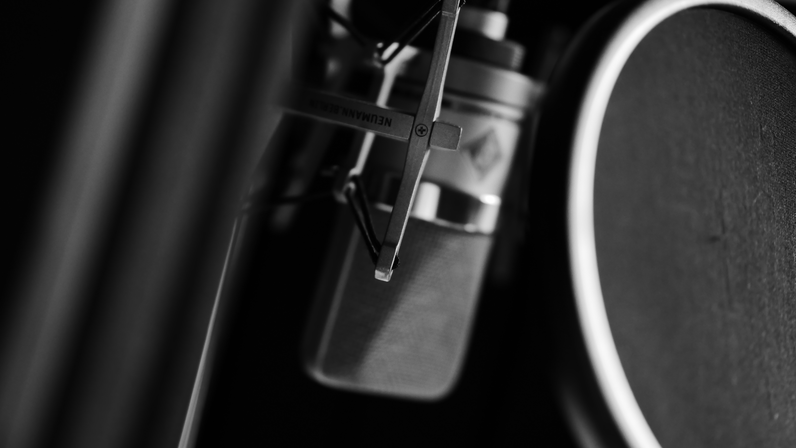

Home Page
Hello, it’s me
Ricardo Soares.
Introducing a portuguese voice that captivates and mesmerizes, my voice over skills are a symphony of versatility and depth. With a warm and soothing tone, I effortlessly breathe life into characters, narratives, and concepts, transporting listeners to vivid worlds of imagination. Whether it's conveying a sense of authority, evoking emotions, or

While working as a radio producer I did my first voice over for a corporate video for a local car advertising system. Things start running from there and for many years I provided voice overs while still working in radio.
Since 2012 I have been a voice over artist full time. Every day is spent either in my studio – recording commercials, corporates, IVR, E-learning, narrations, documentaries, on-line videos and training programmes.
Book me! Allow me to use my experience to bring your script to life and tell your story effectively. I know how to set up and record your script speedily, clearly and efficiently: I’ve been recording voice overs and running my professional recording studio since the early 2000s.
I have been using microphones from very young age.
Firstly, as a musician I got very curious to record my instruments messing around with an old cassette machine.
I suppose it was inevitable that I’d end up as a sound producer and then a voice over artist with my own recording studio.
Voice Over
While working as a radio producer I did my first voice over for a corporate video for a local car advertising system. Things start running from there and for many years I provided voice overs while still working in radio.
Since 2012 I have been a voice over artist full time. Every day is spent either in my studio – recording commercials, corporates, IVR, E-learning, narrations, documentaries, on-line videos and training programmes.
Book me! Allow me to use my experience to bring your script to life and tell your story effectively. I know how to set up and record your script speedily, clearly and efficiently: I’ve been recording voice overs and running my professional recording studio since the early 2000s.
I have been using microphones from very young age.
Firstly, as a musician I got very curious to record my instruments messing around with an old cassette machine.
I suppose it was inevitable that I’d end up as a sound producer and then a voice over artist with my own recording studio.
Voice Over
“The power of a voice can move mountains and touch hearts.”